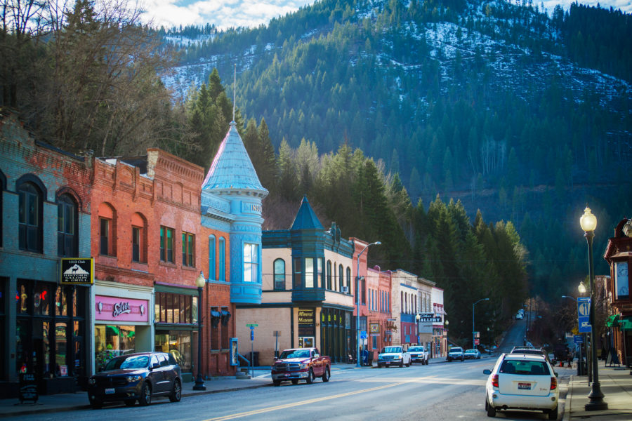

Franklin
 Franklin is a city in Franklin County, Idaho, United States.
The population was 641 at the 2010 census.
It is part of the Logan, Utah-Idaho Metropolitan Statistical Area.
Franklin, Idaho, gets 18 inches of rain per year. The US average is 39.
Snowfall is 58 inches. The average US city gets 26 inches of snow per year.
The number of days with any measurable precipitation is 52.
Weather Data
10 Day Forecast